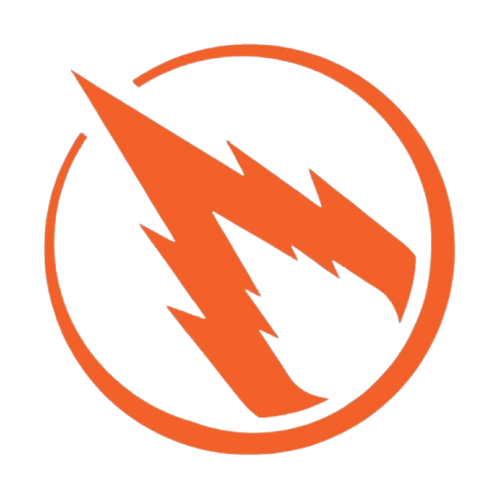

Meteors 12845
FTC Robotics Team
Welcome to the official website of Meteors 12845!
We are a FIRST Tech Challenge robotics team with our rookie year in 2017.
We work with the FIRST Robotics Competition team 3357, The COMETS! and FIRST Lego League team 39846, The ROCKETS!
Our home base is in Grand Rapids, Michigan.
Visit Gallery
Play the Game